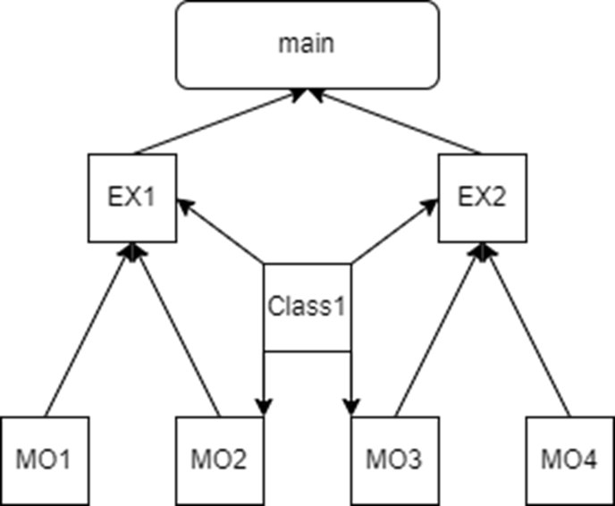
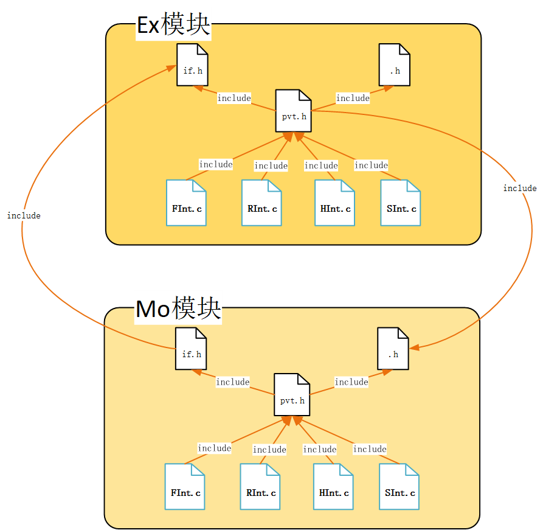
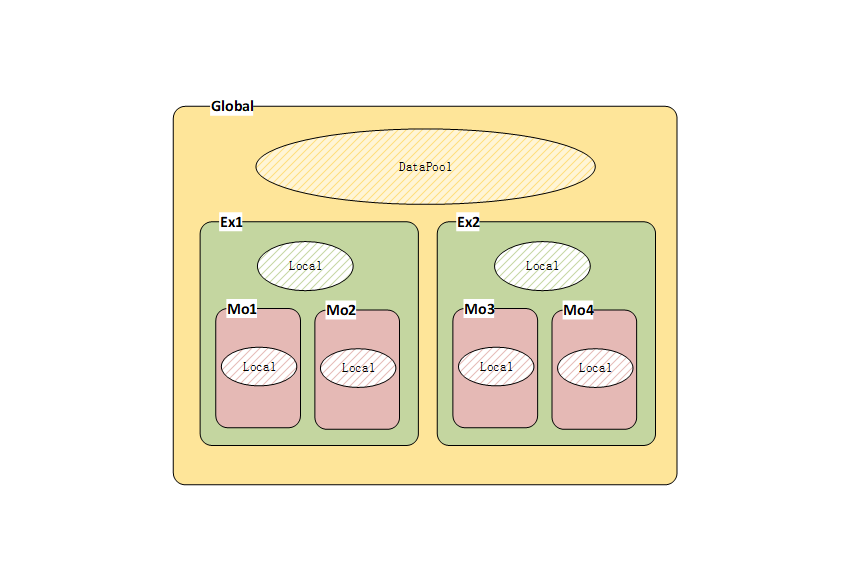
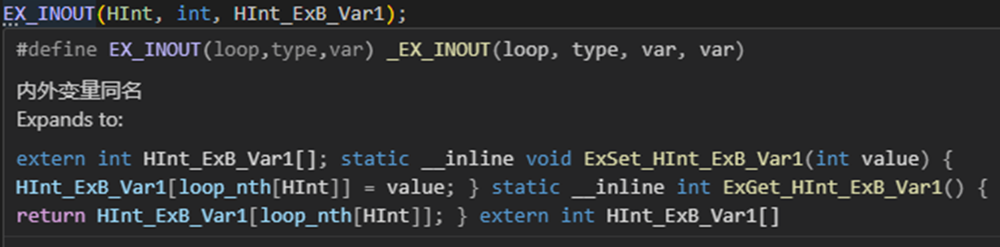
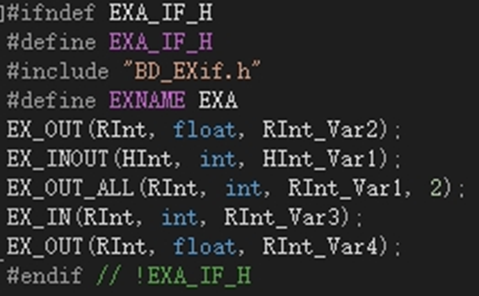
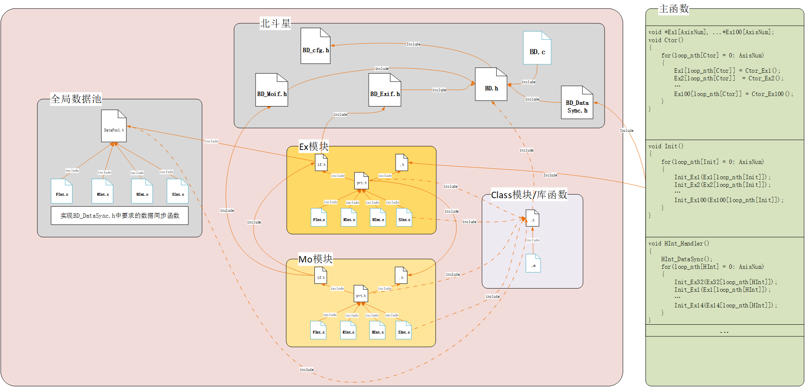
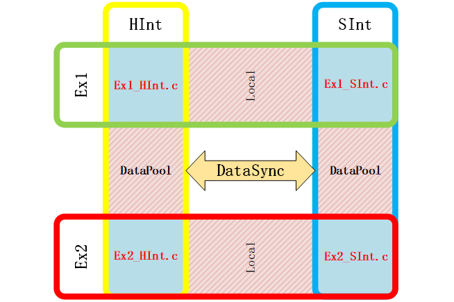
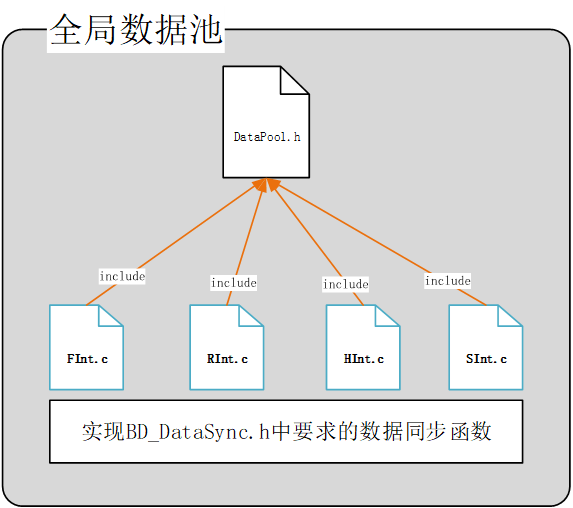
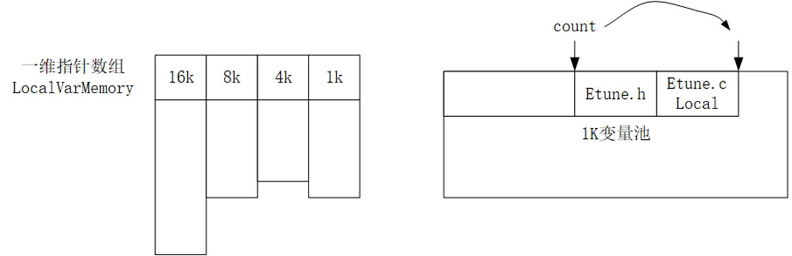

前言 在运动控制、伺服、变频器这类RMS 单调速率裸机硬实时系统 中，系统存在多级固定周期硬件中断，各级速率固定（如 16K 高速电流环、4K 速度环、1K 位置环、4ms 后台），对任务执行抖动、运行时内存分配、多中断数据竞态极度敏感。
BD 是一套纯 C 实现、无操作系统依赖的分层固件架构，专为严苛硬实时场景设计。核心能力：三层模块划分、双层隔离变量体系、分调度全局数据池、宏实现零拷贝全局访问、标准化跨调度同步、配置驱动自动化数据流。下面结合完整代码示例逐层拆解。
一、适用场景核心约束 适配场景
RMS 多级固定周期硬件中断裸机系统；
低抖动要求，禁止运行时动态堆分配；
多轴 / 多实例并行控制，一套逻辑多路复用；
多中断频繁读写共享数据，易出现脏读、数据撕裂；
长期多人迭代，需要强制代码隔离规范。
二、三层模块分层体系（调度属性 + 代码示例） 模块分为 Ex 顶层流程、Mo 子流程、Class 算法三层，嵌套链路：主调度 → Ex → 多层 Mo → Class。

1. Ex 顶层流程模块（有调度，全局变量所有者） 核心特性
绑定多级调度，每个中断独立入口函数；
唯一拥有全局 IN/OUT 变量注册权限；
开机链式创建下属 Mo、Class；
实例化由配置文件自动生成，无需手写循环。
（FInt，RInt … 为不同速率调度的任务）

2. Mo 子流程模块（有调度，仅转发全局变量） 核心特性
Mo 私有头 MoA_Mopvt.h 1 2 3 4 5 6 7 8 9 10 11 #include "MoA_Moif.h" #include "MoA_Mo.h" typedef struct { int a; int b; }MoA; int Func3 (int a, int b) ;STATICINLINE int Func2 () {return 2 ;}
Mo 调度实现 MoA_RMo.c 1 2 3 4 5 6 7 8 #include "MoA_Mopvt.h" void RInt_MoA (void * mo) { MoA* me = (MoA*)mo; me->b = RIntMoAGet_Input1(); RIntMoASet_Output1(me->a + Func3(1 ,2 )); }
Mo 转发全局变量 MoA_Moif.h 1 2 3 4 #include "BD_MOif.h" #include "ModuleA_Exif.h" MO_IN(RInt, int , Input1); MO_OUT(RInt, int , Output1);
3. Class 算法对象（无调度，禁止访问全局） 核心特性 无调度绑定、无 Get/Set 接口，所有数据依靠 Input/Output 结构体传参；分实例化 Class（每个 Ex/Mo 单独分配）、全局工具 Class（全局变量池单例）。
ClassA.h 定义 1 2 3 4 5 6 7 8 9 10 11 12 13 #ifndef CLASSA_H #define CLASSA_H typedef struct ClassA { int cfgParam; void * local[0 ]; }ClassA; typedef struct {int i1,i2;} ClassA_Input;typedef struct {int o1,o2;} ClassA_Output;void * ClassA_Ctor () ;int ClassA_Do (ClassA* me, ClassA_Input* in, ClassA_Output* out) ;#endif
Class 实现 ClassA.c 1 2 3 4 5 6 7 8 9 10 11 12 13 14 15 16 17 #include "ClassA.h" #include "BD_misc.h" void * ClassA_Ctor () { return BD_Malloc(RInt, sizeof (ClassA) + 16 ); } int ClassA_Do (ClassA* me, ClassA_Input* in, ClassA_Output* out) { if (in->i1 > 0 ){ out->o1 = in->i1 * me->cfgParam; out->o2 = in->i2; return 1 ; } return 0 ; }
三、全系统变量分类：严格公私隔离、高保密性变量体系 BD架构设计了强隔离、可库封装、高保密性的双层变量体系，严格区分私有变量与全局共享变量，从语法和架构层面杜绝私有数据泄露，适配固件库封装、商用代码保密场景。所有私有变量完全对内隐藏，仅开放规范的全局交互接口，封装成静态库/动态库后，外部无法访问、篡改内部私有逻辑数据。

1. Local 局部变量 存放于调度独立静态内存池，属于完全私有变量，仅对应实例内部可见、外部绝对不可访问，无调度隔离限制，模块内部任意中断均可读写。该类变量是架构保密设计的核心，封装为库后可实现彻底隐藏：
Ex/Mo Local私有变量：存储模块状态机状态、运行过程缓存、临时控制参数，仅当前Ex/Mo实例内部可读写，其他模块、外部工程无任何访问入口；
Class算法私有变量：依托柔性数组封装算法中间临时值、算法私有配置参数，完全对外透明，是算法核心逻辑保密的关键。Class无任何全局访问接口，彻底隔离外部篡改风险；
库封装保密特性：所有Local、Class私有变量均通过静态内存+模块私有化定义实现，编译封装为库文件后，私有变量内存地址、变量名、逻辑数据完全隐藏，外部无法通过头文件、指针非法读取和篡改，保护核心控制、算法知识产权。
2. 全局共享变量（存全局变量池，双核心属性） 全局变量统一分调度存放（RInt_Data.c/ HInt_Data.c），每个变量同时具备调度属性 、Ex 归属属性 。
调度属性示例 RInt_Data.c 1 2 3 4 #include "global.h" int RInt_Input1[AXISSUM];int RInt_Output1[AXISSUM];
四、全局变量池与零拷贝访问完整原理 + 代码 1. 全局变量池作用 全局静态数组作为统一中间层，所有 Ex 数据流互通介质，模块间无代码依赖，仅通过池下标映射通信。
2. 零拷贝底层宏实现（BD_EXif.h 核心宏） 依靠STATICINLINE+ 字符串拼接宏，编译期内联展开，无函数跳转、无栈拷贝。
1 2 3 4 5 6 #define STATICINLINE static __inline #define _EX_IN(loop, type, myvar, globalvar) \ extern type globalvar[]; \ STATICINLINE type STR(,Ex, Get_, myvar,)() { return globalvar[loop_nth[loop]]; } \ extern type globalvar[] #define EX_IN(RInt, int, Input1)
宏展开后等效代码（完全无拷贝） 强制内联属性取决于编译器，不同编译器不同


Mo 双层内联转发，无额外开销 1 2 #define _MO_IN(loop, type, myvar, exvar) \ STATICINLINE type STR(,Mo, Get_, myvar,)() { return STR(,Ex, Get_, exvar,)(); }
编译后两层 inline 全部展开，最终等价直接操作全局数组，性能和裸写一致，同时拥有权限管控。

五、调度间变量同步机制

不同调度全局副本独立，跨调度数据仅在中断头尾统一同步，业务代码禁止跨调度 Get/Set。
1. 同步函数矩阵 trans.c 1 2 3 4 5 6 7 8 9 10 11 12 13 14 15 16 17 18 19 20 21 22 23 24 25 26 27 28 29 30 31 void HInt2RInt () ;void RInt2HInt () ;uint8_t tranFlag[LoopNum - 1 ][LoopNum - 2 ];void (*tranFun[LoopNum - 1 ][LoopNum - 2 ])() = { { HInt2RInt, HInt2FInt, HInt2SInt }, { RInt2HInt, RInt2FInt, RInt2SInt }, }; #define INT_HANDLER(loop, loopcallback) \ void loop_Handler() { \ for (int32_t slower = LoopNum-2 ; slower>loop-1 ;slower--){ if (!tranFlag[slower][loop-1 ]){ tranFun[slower][loop-1 ](); tranFlag[slower][loop-1 ] = 1 ; } } loopcallback(); for (int32_t slower = LoopNum-2 ; slower>loop-1 ;slower--){ if (!tranFlag[loop-1 ][slower-1 ]){ tranFun[loop-1 ][slower-1 ](); tranFlag[loop-1 ][slower-1 ] = 1 ; } } } INT_HANDLER(HInt, HIntHandler); INT_HANDLER(RInt, RIntHandler);
2. 同步函数示例（跨调度批量拷贝，唯一合法跨数据操作）

1 2 3 4 5 6 void RInt2HInt (void ) { exnum_t axis = 0 ; HInt_Input1[axis] = RInt_Input1[axis]; }
六、配置文件管理 Ex：实例化、数据流、优先级 配置文件仅管理 Ex，Mo/Class 仍在 C 代码内手动创建；通过.zbc配置 + Python 脚本自动生成实例代码、调度入口、初始化逻辑。
1. 配置文件 ModuleA.zbc 1 2 3 4 5 6 7 8 9 10 11 12 13 14 15 // 定义Ex模板：声明输入输出全局变量 MODULE(ModuleA) INPUTVAR(Input1, int) INPUTVAR(Input2, int) OUTPUTVAR(Output1, int) OUTPUTVAR(Output2, int) // 创建Ex实例f1（单轴实例），绑定全局池下标 CREATE(ModuleA, f1) LINKINPUT(Input1, RInt_Input1) LINKINPUT(Input2, DataPool[7]) LINKOUTPUT(Output1, RInt_Output1) LINKOUTPUT(Output2, DataPool[9]) // Fast/Slow/Main三级调度优先级 PRIORITY(100, 200, 400)
2. 脚本自动生成实例代码 ModuleA_f1.c 1 2 3 4 5 6 7 8 9 10 11 12 13 14 15 16 17 18 19 20 21 22 #include "ModuleA.h" #include "DataPool.h" CREATE(ModuleA, f1) LINKINPUT(Input1, RInt_Input1) LINKINPUT(Input2, DataPool[7 ]) LINKOUTPUT(Output1, RInt_Output1) LINKOUTPUT(Output2, DataPool[9 ]) PRIORITY(100 , 200 , 400 ) Input ModuleA_f1_Input = { .Input1 = &RInt_Input1, .Input2 = &DataPool[7 ], }; Output ModuleA_f1_Output = { .Output1 = &RInt_Output1, .Output2 = &DataPool[9 ], }; Module ModuleA_f1 = { .varInput = &ModuleA_f1_Input, .varOutput = &ModuleA_f1_Output, };
3. 总调度自动生成 Schedule.c 1 2 3 4 5 6 7 8 9 10 11 12 13 14 15 16 17 18 19 20 extern Module ModuleA_f1;int Init () { if (!Init_ModuleA(&ModuleA_f1)) return 0 ; return 1 ; } void FastLoop () { FastLoop_ModuleA(&ModuleA_f1); } void SlowLoop () { SlowLoop_ModuleA(&ModuleA_f1); } void MainLoop () { MainLoop_ModuleA(&ModuleA_f1); }
4. 数据流解耦效果 类似于simulink连线，但是并不是Ex间互连，而是两边连到全局数据池中。
ModuleA：LINKOUTPUT(Output1, RInt_Output1)
ModuleB：LINKINPUT(Input1, RInt_Output1)
无需修改任何 Ex 业务 C 代码，实现无耦合数据流。
七、静态内存分配 BD_Malloc

全程放弃标准 malloc，预分配调度静态内存池（相当于静态heap），开机 Ctor 一次性分配模块的Local变量、Class内存以及句柄（指向模块实例的void*），无堆碎片。
BD_misc.c 底层内存管理 1 2 3 4 5 6 7 8 9 10 11 12 13 14 15 16 17 18 byte _LocalArrayHInt[_HIntSize]; byte _LocalArrayRInt[_RIntSize]; byte* _LocalVarMemory[LoopNum-1 ] = {_LocalArrayHInt, _LocalArrayRInt}; int _LocalVarCount[LoopNum - 1 ] = {0 };void * BD_Malloc (Loop loop, int size) { loop -= 1 ; size = (size + 3 ) >> 2 << 2 ; if (_LocalVarCount[loop] + size > _LocalVarMaxSize[loop]){ return _BD_Malloc_ErrorHandle(loop, _LocalVarCount[loop], _LocalVarMaxSize[loop]); } void * ptr = &_LocalVarMemory[loop][_LocalVarCount[loop]]; _LocalVarCount[loop] += size; return ptr; }
所有 Ex/Mo/Class 的 Ctor 均调用此接口，内存分配全部集中在上电初始化阶段，中断运行阶段无任何内存操作，保证抖动极低。
八、架构整体核心优势
硬实时确定性 ：静态内存无运行分配、跨调度数据固定时序同步，中断抖动可控；
零拷贝高性能 ：强制内联宏消除函数开销，16K 高速中断无性能损耗；
分层极致解耦 ：Class 完全隔离全局，支持 PC 仿真、单元测试；Ex/Mo 分层隔离减少全局标志耦合；
配置驱动易维护 ：Ex 实例、数据流连线、调度优先级全部配置化，改逻辑连线无需修改业务代码；
多轴原生支持 ：配置批量生成多 Ex 实例，一套控制逻辑适配多路电机；
语法层安全管控 ：输入双层 const 只读、全局变量调度隔离，编译期拦截非法读写。
九、现存可优化方向
当前 Ex\Mo 并不是标准状态机，可优化为事件驱动 UML 状态机；
补充完整 PC 无硬件仿真工具链，脱离 MCU 调试算法；
完善事件触发机制，提供一些调度安全的基础设施，诸如信号量。
拓展代码生成脚本，自动生成模块间变量连线图。
结语 BD 是一套面向 RMS 裸机硬实时控制设备的工程化 C 架构，所有设计均针对高抖动敏感、多中断并发、多轴复用、长期迭代维护等工业嵌入式痛点落地。依靠三层模块划分、调度隔离全局池、宏零拷贝访问、标准化跨调度同步、配置自动化五大核心能力，为时序严苛的运动控制类固件提供一套标准化、可规模化落地的开发规范。
附：相关资料下载